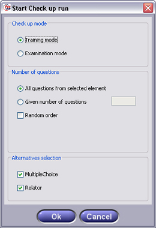

next question

In the Check up View, you can test your knowledge gained so far. Questions concerning the content provided by the Text Study, Slide Show or other Views will be presented in different forms.
To start a Check Up Run, select any chapter or element from the Structure Tree and press the "Start"-Button from the Interaction Panel. From the upcoming dialog, you can set if you want to practice or if you want to perform an examination-like run. Therefore, select to Training Mode or Examination Mode respectively. You can also select which question alternatives you want to be displayed.

In Question mode, you can select any questions from the Structure Tree to display them in the Content Panel. In the Structure Tree, beside folders you find two types of elements: Multiple Choice and Relator Elements.
Training Mode
When you perform your Check Up run in Training Mode, you can select any other Element without having to finish the run. Simply press the Next Button to display the next question of your run. Before the next question is actually shown, Freestyle Learning will check your answers and color them green and red automatically if they are correct or wrong respectively.
Hint: Also not checking a wrong answer is regarded as a correct answer!
Examination Mode
In Examination Mode the Structure Tree will be hidden so you cannot select any elements during the run. Besides, you will get no optical feedback if you answers are correct or not. You have to finish the run in Examination Mode to view your results. Therefore, finishing the Examination Mode will automatically switch to the Evaluation Mode.
View Specific Element Interaction Buttons
| Start run | Start a question run containing the selected node and all child elements of the selected node | |
|
Stop run | Stop current question run |
| Previous and next question |
Select previous next or question of the current run | |
|
Hint | Get a hint from the author |
| Evaluation mode | Switch to Evaluation Mode |
Back to Main Help Page